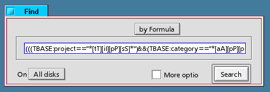

Sample Code
While several of these sample scripts simply loop through a directory and act on every file, the real power of a database emerges when using more specialized criteria. For example, if you use the Category attribute to divide up your databased files, you may want to process just one category at a time. Since you're doing all of this from within shell scripts, you need to know how to run BeOS queries from the command line.
Command-line queries use the Find by Formula syntax you've seen in the query application. The easiest way to construct queries for your scripts is to build them as Attribute queries in the GUI, then switch to Formula mode, copy the formula to the clipboard, and paste it into your script.
Note: If TrackerBase files don't show up as an option in the GUI query tool's filetypes dropdown, you may have to reboot your machine first.
Begin by constructing your query in Attribute mode. Be sure to include the Project attribute to avoid getting results from other TrackerBase projects.

When satisfied with your query, toggle to Formula mode, select the formula, and copy it to the clipboard.
The command-line query syntax is:
query "<your query here>"For example, this query will find all of the TrackerBase files that belong to a project called "news" :
query "((TBASE:project=="*[nN][eE][wW][sS]*")&&(BEOS:TYPE=="text/trackerbase"))"The quotes are important. Always remember to include a value for the Project attribute so the query only returns results specific to your project -- you don't want your script acting on files from these sample projects, for instance.
There are a few interesting things you can do with Formula queries that you can't do with GUI queries. For example, you can search for two or more filetypes at once by adding a second type and separate them with double pipes (||) instead of double ampersands (&&). || means "or" instead of "and."
((BEOS:TYPE=="text/trackerbase") || (BEOS:TYPE=="text/plain"))When editing query formulas, take care to nest your conditions in parentheses properly. If you speak regular expressions, you can insert them between any two " "s for far greater control.
Remember that all queries must include at least one indexed attribute. See the Attributes page for more on that.
Next: Caveats